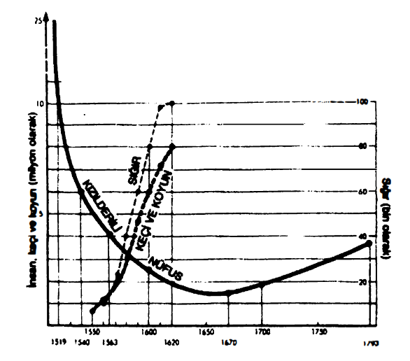
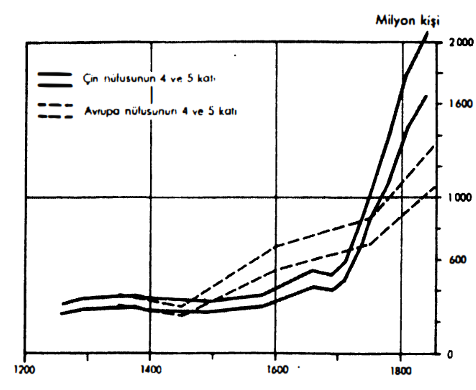
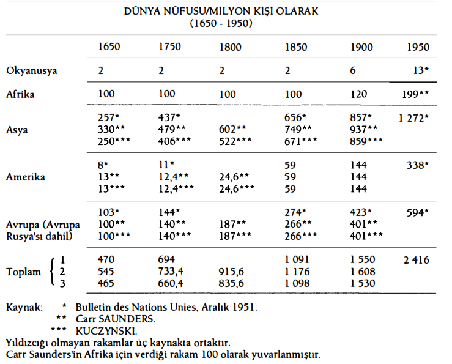
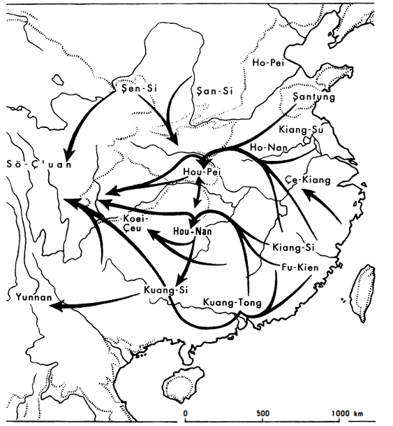

Maddi hayat insanlara ve nesnelere, nesnelere ve insanlara dairdir. Nesneleri incelemek -besinler, konutlar, elbiseler, lüks, aletler, para araçları, köy veya kent çevreleri-, sonuç olarak insanın kullandığı her şeyi incelemek, onun gündelik hayatının ölçüsünü almanın tek yolu değildir. Dünyanın zenginliklerini aralarında paylaşanların sayısının da anlamı vardır. Ve bugünün dünyasını ilk bakışta, 1800 öncesi insanlıklarından farklılaştıran dış işaret, insan sayısındaki yeni ve olağanüstü artıştır: 1979'da ortalık insan kaynamaktadır. Bu kitapta ele alınan dört yüzyıl boyunca, dünya nüfusu hiç kuşkusuz iki katına çıkmıştı; oysa yaşadığımız dönemde, bu nüfus her 30 veya 40 yılda bir katlanmaktadır. Bunun maddi gelişme sayesinde olduğu aşikârdır. Fakat bu gelişmede insanların sayısı sonuç olduğu kadar, nedendir de.
İnsanların sayısı her halükârda bir “gösterge” sunmaktadır; başarıların ve başarısızlıkların bilançosunu oluşturmakta, tek başına dünyanın diferansiyel bir coğrafyasının taslağını çıkartmaktadır; şurada şöylesine bir iskân edilmiş kıtalar, burada daha şimdiden aşırı yoğun nüfuslu bölgeler, şurada uygarlıklar, burada henüz ilkel kültürler; nüfus sayısı çeşitli canlı kitleler arasındaki belirleyici oranları işaret etmektedir. Ve merak uyandırıcı bir şekilde, dünden bugüne çoğu zaman en az değişen bu diferansiyel coğrafya olacaktır.
Buna karşılık değişen, hem de tepeden tırnağa değişen, bizatihi hayatın yükselme ritmidir. Şu anda toplumlara ve ekonomilere göre az veya çok canlı olan bir gelişme sürmektedir. Dün ise, birbirlerini izleyen med ve cezir hareketleri gibi, yükselmelerin arkasından gerilemeler gelmekteydi. Nüfusun bu zıt yönlü hareketi, bu yükselmeler ve geri çekilmeler eskinin hayatının simgesidir; duraklamaların ve gelişmelerin birbirlerini izledikleri bir süreç içinde, birinciler İkincileri âdeta tamamen giderme konusunda -ama tam da değil- inat etmekteydiler. Bu temeldeki gerçeklere oranla her şey veya adeta her şey ikincil olarak gözükecektir. Açıktır ki, insanlardan hareketle yola çıkmak gerekmektedir. Sonra nesnelerden söz etmenin zamanı gelecektir.
Can sıkıcı nokta, bugün bile dünya nüfusunu ancak % 10 yaklaşık olarak biliyorsak, dünün nüfusu hakkında çok yetersiz bilgilere sahip olmamızdır. Ve fakat, uzun dönemde olduğu kadar, kısa dönemde de, yerel gerçeklikler katında olduğu kadar, muazzam dünya gerçeklikleri basamağında da her şey sayıya, insan kitlesinin salınımlarına bağlıdır.
XV. yüzyıldan XVIII. yüzyıla kadar nüfus artarsa veya azalırsa, her şey değişmektedir. Eğer insanlar daha kalabalık hale gelirlerse, üretim ve mübadelede artış meydana gelmekte; işlenmeden duran ormanlık, bataklık veya tepelik toprakların sınırında ekim alanlarının ilerlemesi; imalatın ilerlemesi; köylerin, ondan da sık olarak kentlerin büyümesi; hareket halindeki insanların kitlesinin genişlemesi yaşanmaktadır; insan sayısındaki artışın uyguladığı basınca karşılık, daha fazla yapıcı yönde tepki vardır -şu yerine yerleştirme hareketi-. Tabii ki aynı zamanda savaşlarda ve çatışmalarda, korsanlıkta ve haydutlukta da artış vardır; ordular ve silahlı çeteler büyümektedirler; toplumlar olağandakinden daha fazla yani zenginler veya yeni ayrıcalıklılar yaratmaktadırlar; mümkünlerin sınırına olağan zamandakinden daha kolay ulaşılmaktadır. Alışılmış işaretler böyledir. Fakat bu arada nüfus artışlarının koşulsuz methiyesini yapmayalım. Bunlar bazen iyi, bazen de kötü sonuçlu olmuşlardır. Artmakta olan bir nüfus, işgal ettiği mekânla, elinin ulaşabildiği zenginliklerle olan ilişkilerinin değişmesine tanık olmaktadır; bu arada “kritik eşikler”i aşmakta ve her seferinde tüm yapısı yeniden sorunlu hale gelmektedir. Kısacası, oyun hiçbir zaman basit, tek yönlü değildir: sonunda artan miktarda bir aşırı insan yükü, toplumların beslenme olanaklarını aşmaktadır -dün de aşmaktaydı-; XVIII. yüzyıldan önce sıradan olan bu gerçeklik, bugün bazı geri ülkelerde hâlâ geçerliğini korumaktadır. Bu durumda daha iyi yaşama konusunda belli bir sınır aşılmaz hale gelmektedir. Çünkü nüfus artışları vahim bir hale gelerek, hayat düzeylerinde bir bozulmaya yol açmakta, kötü beslenenlerin, sefillerin, köklerinden kopmuşların her zaman etkileyici olan sayılarını artırmaktadır. Salgınlar ve kıtlıklar (önce birincisi belirmekte, sonra da İkincisine refakat etmektedir), beslenecek boğazlarla, zor sağlanan iaşeler arasındaki, işgücü ile istihdam olanakları arasındaki dengeyi yeniden kurmaktadırlar ve çok büyük kabalıktaki bu ayarlamalar, Eski Rejim yüzyıllarının güçlü hattını meydana getirmektedirler.
Batının saati hakkında birkaç kesinleme vermek gerekirse, 1100-1350 arasında uzun bir nüfus artışını, 1450-1650 arasında bir başkasını, 1750'den itibaren artık gerileme içermeyen bir yenisini işaret edebilirim. Böylece, aralarında kıyaslanmaları mümkün olan ve incelememizin tam ortasında yer alan ilk ikisinin 1350-1450 arasında aşın sertlikte ve 1650-1750 arasında vurgulu bir güçte olan gerilemeler tarafından izlendiği (1650-1750 arasındaki gerilemeden çok, artış hızındaki yavaşlamadır) üç geniş biyolojik yayılma dönemine sahibiz. Bugün geri ülkelerdeki her nüfus artışı, hayat düzeyinde düşüşlere yol açmakla birlikte, ne mutlu ki şu vahşi insan deflasyonlarına (en azından 1945'ten beri) neden olmamaktadır.
Her nüfus gerilemesi belli sayıda sorunu çözmekte, basınçları yok etmekte, hayatta kalanları ayrıcalıklı hale getirmektedir; bu, ayağı kırılan alın öldürülmesi gibi bir ilaçtır, ama gene de bir ilaçtır. XIV. yüzyılın ortasındaki Kara Veba'dan ve onu izleyen ve onun darbelerini daha da ağırlaştıran salgınlardan sonra, miraslar birkaç kişinin ellerinde yoğunlaşmıştır. Yalnızca iyi topraklar işlenmiş (ilaha az zahmetle daha çok verim), hayatta kalanların yaşam düzeyi ve gerçek ücretleri yükselmiştir. Böylece Languedoc'ta 1350-1450 arasında, köylünün ataerkil ailesiyle birlikte, boş bir ülkenin efendisi olacağı yüzyıl başlamıştır; vahşi ağaç ve hayvanlar, eskinin müreffeh kırlarını işgâl etmiş durumdadırlar. Fakat insanlar kısa bir süre sonra yeniden çoğalacak, vahşi hayvan ve bitkilerin ondan aldıklarını yeniden fethedecek, tarlaları taşlardan temizleyecek, ağaç ve makilerin köklerini sökeceklerdir ve bizzat bu ilerleme onların omuzlarına çökecek, sefaletini yeniden yaratacaktır. 1560 veya 1580'den itibaren İspanya, İtalya ve muhtemelen tüm Batı'da olduğu gibi, Fransa'da da nüfus yeniden çok fazla hale gelmiştir. Monoton tarih yeniden başlamış ve kum saati tersine dönmüştür. Demek ki insan ancak kısa aralıklarda mutludur ve bunu ancak zaman çok geç olduktan sonra fark edebilmektedir.
Öte yandan, bu uzun dalgalanmalar, Avrupa dışında da, tamamen aynı saatte ortaya çıkmaktadırlar. Çin ve Hind, sanki insanlığın tümü başat bir kozmik kaderin pençeleri içindeymişçesine ve sanki bu kadere nazaran, tarihin geriye kalan kısmı ikincil bir hakikatmişçesine, muhtemelen Batı ile aynı ritmde, nüfus artışı ve gerilemesine uğramıştır. İktisatçı ve nüfusbilimci Ernst Wagemann her zaman bunu düşünmüştür. Eşzamanlılık XVIII. yüzyılda aşikâr, XVI. yüzyılda da muhtemelden daha fazla bir şeydir; XVIII. yüzyılda ise eşzamanlılık olduğunu ve bunun Aziz Louis'nin Fransa'sından, Moğolların uzaktaki Çin'ine kadar böyle olduğu varsayılabilir. İşte sorunları kaydıracak ve onları tek bir darbeyle basitleştirecek şey. Ernst Wagemann, nüfus artışına, ekonomik, teknik ve tıbbi gelişmeleri ortaya çıkartanlardan farklı nedenler atfedilmesi gerektiği sonucuna varmaktadır. Bilinen toprakların bir ucundan diğerine, az veya çok eşzamanlı olan bu dalgalanmalar her halükârda, çeşitli insan kitlelerinin aralarında, yüzyıllar boyunca nisbeten sabit sayısal oranlara sahip olduklarını düşünmeye, bunu anlamaya yardım etmektedirler: şu buna eşit veya bir başkasının iki katı. Birini bilince, diğerinin ağırlığını tahmin etmek ve bunu böyle sürdürmek; böylece bu cins hesaplamaya içkin hata payıyla birlikte, insanların tüm kitlesinin rakamına ulaşmak mümkündür. Bu bütünsel rakamın yararı aşikârdır: ne kadar belirsiz ve zorunlu olarak hatalı olursa olsun, tek bir kitle, istatistikçilerin diyecekleri gibi tek bir stok olarak kabul edilen insanlığın biyolojik ilerlemesini kaydetmeye yardımcı olmaktadır.
XV. ile XVIII. yüzyıllar arasındaki dünyanın tümünün nüfusunu kimse bilmemektedir. istatistikçiler, tarihçilerin sundukları birbirlerinden sapan, az miktarda ve narin rakamlardan hareketle uyum sağlamayı becerebilmiş değillerdir, ilk bakışta bu kuşkulu desteklerin üzerine hiçbir şey inşa edilememektedir. Fakat denemeye girişmeye değmektedir.
Çok az ve çok az güvenilir sayılar: bunlar yalnızca Avrupa'ya ve birkaç değerli çalışmadan ötürü de, Çin'e ilişkindirler. Çin'e ilişkin olarak âdeta geçerli sayılabilecek nüfus sayımlarına ve tahminlerine sahibiz. Eğer zemin her türlü deneyden geçmiş bir sağlamlıkta değilse, orada macera aramak gerçek tehlikeden arınmış değildir.
Fakat acaba dünyanın geri kalanı için durum nedir? Tarihi konusunda genel olarak pek kaygılı olmayan, bu tarihi aydınlatacak rakamlar hakkında da daha fazla kaygı duymayan Hindistan'a ilişkin olarak hiç veya hemen hemen hiç rakam yoktur. Japonya dışında, Çinli olmayan Asya hakkında fiilen hiçbir şey yoktur. Tabii ki Avrupalıların yolculuklarının geçerken hafifçe temas ettikleri Okyanusya hakkında da hiçbir şey yoktur. Tasman Yeni Zelanda'ya 1642 Mayısında; adını bıraktığı ada olan Tasmanya'ya aynı yılın Aralığında ulaşmış; Cook Avustralya'ya bir yüzyıl sonra, 1769 ve 1783'te; Bougainville keşfetmediği Tahiti'ye, Yeni Cythere'e Nisan 1768'de varmıştır. Zaten dağınık insan gruplarını gündeme getirmeye ihtiyaç var mıdır? İstatistikçiler, tablolarının üstüne, ele alınan dönem her ne olursa olsun, Okyanusya'nın tamamı için iki milyondan fazla yazmamaktadırlar. Sahra'nın güneyindeki Kara Afrika için de, XVI. yüzyıldan itibaren köle ticaretine ilişkin, birbirlerinden sapan rakamlardan başka güvenilir bir şey yoktur; üstelik bu rakamlar sağlam olsalardı bile, bunlardan her şeyi çıkartmak mümkün olmazdı. Nihayet, Amerika hakkında kesin hiçbir şey yoktur veya en azından ona ilişkin olarak, birbirleriyle çelişen iki hesaplama vardır.
Angel Rosenblat'a göre yalnızca regresyon yöntemi vardır. Bu yöntem bugünkü rakamlardan hareketle geriye doğru hesap yapmaya dayanmaktadır. Bu yöntemle Amerika kıtasının tümü için, İspanyol fethinin ertesinde çok düşük bir rakama, 10-15 milyon kişilik bir sayıya ulaşılmaktadır ve zaten zayıf olan bu nüfus, XVII. yüzyılda 8 milyon rakamına düşecek kadar fakirleşmiş kabul edilmektedir. Bu nüfus ancak XVIII. yüzyıldan itibaren yeniden ve yavaşça artmaya başlamıştır. Ancak Berkley Üniversitesinden Amerikalı tarihçiler (Cook, Simpson, Borak) -kısaltmak kastıyla, yanlış olarak “Berkley Okulu” adı verilmektedir- tam Avrupalıların fethinden sonra, Meksika'nın bazı bölgeleri için bilinen kısmi rakamlardan hareketle, bir dizi enterpolasyon hesaplarına girişmişlerdir. Sonuçlar çok şişkin rakamlar vermektedir: 1519 için 11 milyon (1948'de önerilen tahmin), ama 1960'ta dosyaya eklenen veya yeniden ele alınan tüm parçalar zaten bizatihi muazzam olan rakamı, yalnızca Meksika için 25 milyon kişiye çıkartmışlardır. Daha sonra nüfus sürekli olarak azalacaktır ve bu azalma dört nala olacaktır: 1532, 16.800.000; 1548, 6.300.000; 1568, 2.650.000; 1580, 1.900.000; 1595, 1.375.000; 1635, 1.000.000; 1656'dan itibaren yavaş bir yükselme harekete geçmekte ve 1760'tan itibaren netleşmektedir.

MEKSİKA'DA İNSAN SÜRÜLERE YER TERK EDİYOR
Bu muazzam rakamlar, Amerika'nın tümü için, bizi 1500'e doğru 80-100 milyonluk bir nüfus tahminine sürükleyecektir. Kimse buna, aralarında Peder Bartolomeo de Los Casas'ın da bulunduğu çok sayıda fetih kronikçisi ve arkeologunun tanıklıklarına rağmen, gözü kapalı olarak inanmayacaktır. Mutlak bir şekilde kesin olan, Amerika'nın Avrupa fethinden sonra devasa bir nüfus azalmasına tanık olduğudur. Bu azalma belki bire on değildir, ama hiç kuşkusuz muazzamdır ve Avrupa'da şu XV. yüzyılın karanlık sonundaki kara veba ile onu izleyen felâketlerle kıyaslanabilecek nitelikte değildir. Amerika'da acımasız bir savaş ile, aynı zamanda eşi olmayan ağırlıktaki sömürgeci bir çalıştırmanın sertliklerinin bu azalmada pay ve sorumlulukları olmuştur. Fakat aynı XV. yüzyılın sonunda kızılderili nüfus narin bir demografinin damgasını yemiş durumdaydı, özellikle her türden hayvan sütünün ikâme edilebilmesinin olanaksızlığı nedeniyle, anneler çocuklarını üç veya dört yaşlarına kadar kendi sütleriyle beslemek zorunda kalıyorlardı, bu da kadın “doğurganlığı”nı bu uzun emzirme boyunca yok ederek, her türden hızlı bir nüfus toparlanmasını cansız hale getiriyordu. Öte yandan kararsız dengede olan bu Amerikalı kızılderili kitlesi bir dizi korkunç mikrobun saldırısına da uğramıştır ve bu saldırı Beyazların XVIII. yüzyılda ve özellikle XIX. yüzyılda Pasifik'teki varlıklarının zincirlerinden dramatik bir şekilde boşaltacağının benzeri olmuştur.
Hastalıklar -yani Avrupa ve Afrika'dan ithal edilen virüsler, bakteriler ve parazitler-, tıpkı onlar gibi Atlantiğin öte tarafından gelmiş olan hayvanlar, bitkiler ve insanlardan çok daha hızlı yayılmışlardır. Yalnızca kendi hastalık yapıcı unsurlarına uyum sağlamış olan Amerika kızılderilileri, bu yeni tehlikeler karşısında silahsız kalmışlardır. Avrupalılar daha Yeni Dünya'ya adımlarını atar atmaz, çiçek hastalığı 1493'te Santo Domingo'da, 1519'da Cortez'in kuşatma altında tuttuğu, ama henüz giremediği Meksika'da ve 1530'larda İspanyol askerlerinden önce Peru'da iş başındadır. Daha sonra, 1560'ta Brezilya'ya ve 1635'te Kanada'ya ulaşmıştır. Ve Avrupa'nın yarım bir bağışıklık sağlamış olduğu bu hastalık, yerli nüfusun içinde karanlık biçmeler meydana getirmiştir. Aynı şekilde, beyazlar veya zenciler tarafından getirilen hastalıklar olan kızamık, grip, dizanteri, cüzzam, veba (ilk fareler Amerika'ya 1544- 1546'ya doğru ulaşacaklardır), cinsel hastalıklar (tekrar döneceğimiz büyük sorun), tifoid, fil hastalığı, bunların hepsi de yeni bir güçle saldırmışlardır. Hiç kuşkusuz bazı hastalıkların gerçek doğası hakkındaki tereddütler sürmektedir, fakat yayılmacı mikrobik istila konusunda hiçbir şüphe yoktur: Meksika nüfusu, devasa salgınların darbeleri altında erimiştir, 1546'da iyi tanımlanamayan bir “veba”nın (tifüs veya grip) darbeleri altında ki, bu sonuncusunun 1576-1577'de yeniden ortaya çıkması iki milyon ölüme yol açmıştır. Bazı Antil adaları nüfuslarını tamamen kaybetmişlerdir. Sarı hummanın tropikal Amerika'nın yerli bir hastalığı olduğunu düşünmekten vazgeçmek için, tabii ki gayret sarfetmek gerekmektedir... Bu hastalık muhtemelen Afrika kökenlidir. Kendini her halükârda 1648'e doğru Küba'da, 1685'te Brezilya'da olmak üzere, geç göstermiştir; buralardan hareketle Yeni Dünya'nın tüm tropikal kesimine yayılacaktır; hastalık XIX. yüzyılda Buenos Aires'ten Kuzey Amerika'nın doğu kıyısına kadar uzanacak ve bizzat Akdeniz Avrupa'sının limanlarına ulaşacaktır. Bu ölümcül refakatçi olmaksızın, XIX. yüzyılda Rio de Janeiro'yu anlamak mümkün değildir. Zikredilmesi gereken bir ayrıntı olarak, o zamana kadar yerli halkı biçmiş olan kitlesel salgınlar, bu sefer artık bölgede sürekli hale gelmiş bir belânın gözde kurbanları olarak, kıtaya yeni gelen beyazları seçmişlerdir. 1780'lere doğru Porto Belo'da kalyonların mürettebatı hastalığın pençesine düşmekte ve büyük tekneler limanda kışlamaya zorlanmaktadırlar. Demek ki Yeni Dünya korkunç afetlerden çekmektedir. Biyolojik olarak ayrı bir dünya olan Pasifik adalarına beyazlar yerleştiklerinde, bu belânın orada da ortaya çıktığı görülecektir. Örneğin malarya Endonezya'ya ve Okyanusya'ya geç gelmiştir. Bu hastalık Batavia'yı çökertmek üzere 1732'de onu gafil avlamıştır.
Böylece A. Rosenblat ile Berkley tarihçilerinin hesapları uyuşturulabilir, yani birincisinin temkinliliği ile İkincilerin romantizmi: her iki tarafın da verdiği rakamlar, fetih öncesinde veya sonrasında yer tutuluyor olmasına göre hakiki veya hakikiye benzer olabilirler. Demek ki Woytinski ve Embree'nin kanaatlerini bir kenara bırakmak gerekmektedir. Bunlardan sonuncusu, dün “Horn burnuyla Alaska arasında, Colombus öncesi hiçbir dönemde, asla on milyondan fazla canlı insan olmamıştır” diye belirtmiştir. Bugün bundan kuşku duyabiliriz.
Amerika örneği, hangi basit yöntemlerle (hatta çok basit) nisbeten sağlam rakamlardan hareketle, diğerlerinin dolaylı olarak tahminine veya hayal edilmesine ulaşılabileceğini göstermektedir. Bu belirsiz yollar, ancak reddedilmesi mümkün olmayan bir belge ile kanıtlanmış olanla tatmin olmaya alışık tarihçiyi, haklı olarak kaygılandırmaktadır. İstatistikçi ne bu kaygılara ne de bu cesaretsizliklere sahiptir. Bir sosyolog- iktisatçı, Paul A. Ladame keyifli bir şekilde “bizi bakkallık yapmamakla eleştirmek mümkündür; buna ayrıntıların önemi yoktur diye cevap veririz; sadece büyüklük ilgilendirmektedir” diye yazmaktadır. Büyüklük sırası, muhtemelen tavan veya taban, en üst veya en alt düzey.
Herkesin haksız veya haklı olduğu bu tartışmada, hesapçıların yanına geçelim. Bunlar dünyanın çeşitli nüfusları arasında, sabit değilse bile, en azından değişmekte çok yavaş olan oranların her zaman olduğunu varsaymaktadırlar. Bu, Maurice Halbwaschs'in kanışıydı. Başka bir ifadeyle, dünyanın tümünün nüfusu, çoğu zaman az değişken nitelikte, kendi yapıları'na sahip olmalıdır; çeşitli insan gruplarının aralarındaki sayısal orantı, grosso modo sürecektir. Berkley okulu Meksika'ya ait rakamdan, Amerika'nın tümü için bütünsel bir rakam çıkartmaktadır. Aynı şekilde, 800 yılları civarındaki Trier nüfusunu yaklaşık olarak bilen Kari Lamprecht, sonra da Kari Julius Beloch, Germanya'nın tümü için geçerli bir rakam hesaplamışlardır. Sorun her zaman aynı olacaktır: muhtemel orantılara yaslanarak, daha üst mertebeden gerçeğe benzeyen ve bir büyüklük sırası saptayacak olan rakamlara geçmek üzere, bilinen rakamlardan hareket etmek. Bu sıra hiçbir zaman değersiz değildir, ancak onu gerçekte olduğu haliyle kabul etmek koşuluyla. Gerçek rakamlar daha iyi olanı, ama bunlardan yoksunuz.
Avrupa konusunda, tarihsel nüfusbilimin büyük başlatıcısı K. Julius Beloch'un (1854-1929), Paul Mombert'in, J. C. Russel'ın ve Marcel Reinhardt'ın kitabının sonuncu yayının akıl yürütmeleri, hesapları, rakamları gündeme getirilmiştir. Bu rakamlar birbiriyle uyum içinde olabilirler, çünkü herkes bunları elifi elifine diğerinden ödünç almıştır. Ben kendi hesabıma, Avrupa'yı her seferinde, bu şekilde doğunun “vahşi Avrupa’sını da kapsayacak şekilde Urallara kadar yaygınlaştırmak için en yüksek düzeyleri seçtim veya hayal ettim. Balkan yarımadası, Polonya, Moskof devleti, İskandinav ülkeleri için ileri sürülen rakamlar çok rizikolu olup, istatistikçiler tarafından Okyanusya veya Afrika için önerilenlerinden, ancak bir gömlek daha gerçeğe yakındırlar. Bu genişletme bana gerekli olarak gözükmüştür: birim ölçüsü olarak seçilen Avrupa'ya, ele alınan dönem ne olursa olsun, aynı mekânsal boyutları sağlamaktadır; sonra bu Urallara kadar olan genişletme, terazinin iki kefesini daha iyi dengelemektedir: bir yanda genişletilmiş Avrupa ile öte yanda Çin, bu eşitlik XIX. yüzyıldan itibaren güvenilir değilse bile, en azından kabul edilebilir rakamlara sahip olduğumuz andan itibaren doğrulanmaktadır.
Çin'de resmi nüfus sayımlarına dayanan rakamlar, bu nedenden ötürü tartışmasız bir değere kavuşamamaktadırlar. Bunlar maliye rakamlarıdır ve kim mâliyeden söz ediyorsa, hileden ve yanılgıdan veyahut da her ikisinden birden söz ediyordur. A. P. Usher bu rakamların kabaca çok düşük olduklarını düşünürken haklıdır ve onları, bu cinsten işlemlerin içerdiği belirsizliklerle beraber yükseltmiştir. Bu aynı zamanda, bu mükemmel olmayan muhasebe hesapları için de macera aramış olan sonuncu tarihçinin19 de yaptığı şeydir. Zaten uç uca getirilen ham rakamlar aşikâr olanaksızlıkları; Çin kitlesi için bile anormal bir genişlikte olan düşüş veya yükselmeleri açığa çıkartmaktadırlar. Kuşkusuz bunlar çoğu zaman “nüfus düzeyini olduğu kadar, imparatorluktaki düzen ve otoriteyi de” ölçmektedirler. Böylece 1674'te feodallerin, Vu San-Kuei'nin büyük çaplı ayaklanmasından ötürü, bir önceki yıla nazaran 7 milyon azalmıştır. Eksik olarak gözükenler ölmemişler, ama merkezi otoriteden çıkmışlardır. Bunlar boyun eğer eğmez, istatistikler nüfusun en yukarı noktasındaki doğal artışıyla hiçbir ortak noktası olmayan, emsalsiz bir ileri sıçrama yapmaktadırlar.
İlâve edelim ki, nüfus sayımları her zaman aynı tabana sahip olmamışlardır. 1735'ten önce sayılanlar, cen-ting’ler, yani on altı ile altmış yaş arasındaki vergi mükellefleridir; buna bağlı olarak onların sayısını çarpmak, böylece toplam nüfusun % 28'ini meydana getirdiklerini kabul etmek gerekmektedir. 1741'den itibaren, buna karşılık nüfus sayımı insanların gerçek sayısına yönelmiş ve nüfus 143 milyon olarak bulunmuştur; oysa cen-ting sayısından hareketle yapılan hesaplama 1734'te 97 milyon rakamını vermişti. Ayarlama işlemi hesabın da yardımıyla ve birçok kaba şakaya yol açarak yapılabilir, ama bu kimi tatmin edecektir ki? Ancak bu uzun dönemli rakamlar değerlerini korumaktadırlar, uzmanlar bunlara katılmaktadırlar ve rakamların en eskisi olan, Mingler Çin'ine (1368-1644) ait olanları artık her türlü kuşkunun dışındadır.
Kısacası, nasıl bir malzeme ile çalışmamızın gerektiği görülmektedir. Bu rakamlar bir grafik üzerine aktarıldıklarında, Ural'a kadar yayılan bir Avrupa ile eyaletlerinin asıl topraklarıyla sınırlandırılmış bir Çin arasındaki eşitlik, ancak yaklaşık olarak kurulabilmektedir. Zaten bugün doğum oranındaki üstünlüğünden ötürü, terazi giderek Çin'in tarafına yatmaktadır. Fakat ister yaklaşık olsun, ister olmasın, bu kaba eşitlik, tarihin, dünyanın son beş veya altı yüzyıl arasındaki net yapılarından biri olma özelliğini taşımaktadır ve dünyanın yaklaşık bir nüfusunu hesaplamak üzere bu yapıdan hareket edebiliriz.

DÜNYA NÜFUSU (XIII.-XX. YÜZYIL)
XIX. yüzyılla birlikte elimizde gerçeğe yakın istatistikler olmaya başlar başlamaz (ilk gerçek nüfus sayımı 1801'de yalnızca İngiltere için yapılanıdır), Çin veya Avrupa'nın her biri, tüm insanlığın grosso modo çeyreğini temsil etmişlerdir. Tabii ki geçmişe doğru taşman böylesine bir oranın geçerliği önceden garantili değildir. Avrupa ve Çin, dünden bugüne dünyanın en büyük nüfus yığılma alanları olmuşlardır. Eğer bu iki bölge böylece diğerlerinden daha hızlı koşmuşlarsa, XVIII. yüzyıldan önceki geçmiş için, bu kitlelerden her birinin dünyanın tüm nüfusuna nazaran bire dört yerine, bire beşlik bir orana sahip olduklarını kabul etmek daha uygun olacaktır. Bu tedbir nihayette belirsizliklerimizi işaret etmektedir.
Demek ki Çin ve Avrupa'ya ait iki eğriye, dört veya beş katsayılarını uygulayarak, dünya nüfusunun muhtemel rakamı için dört eğri elde edeceğiz ki, bunlar kabaca dört veya beş Avrupa ile dört veya beş Çin'e tekabül etmektedirler. Toparlayıcı grafiğin üzerinde, en alt rakamlardan en üst rakamlara geniş bir mümkünler (ve hatalar) alanını sınırlayan karmaşık bir eğri olsun. Bu sınırlar arasında, yakınlarında, XIV. yüzyıldan XVIII. yüzyıla kadarki dönemde dünya nüfusunu gelişmesi içinde veren bir hat düşünelim.
Böylesine bir hesaplama içinde görülen bu nüfus, kabaca 1300'den 1800'e olan uzun dönemde yükselme eğiliminde olmuştur, tabii burada, daha önce sözünü ettiğimiz anlık ve şiddetli gerilemeler hesaba katılmamaktadır. Eğer başlangıç noktası olan 1300-1350 için en düşük tahmini (250 milyon) seçerken, varış noktası için en yüksek tahmini (1780'de 1.780 milyon) alırsak, bu durumda artış % 400 olacaktır. Hiç kimse buna inanmak zorunda değildir. Başlangıç noktasını en yüksek tahmin ile saptarsak (350 milyon) ve varış noktası için de Wilcox'a ait olan en düşük rakamı (850 milyon) kabul edersek, artış bu kez % 138 olacaktır. 500 yıllık bir dönemde düzenli bir ortalama ile (tabii ki zihinden yaratılan basit bir düzenlilik) nüfus yılda % 01,73'lük bir hızla artmış olacaktır. Bu da eğer sabit olsaydı, ancak yıllar geçtikten sonra fark edlebilecek bir harekete tekabül etmektedir. Ama bu dünya nüfusunun bu muazzam zaman aralığında, herhalde ikiye katlanmasını engellememektedir. Ne ekonomik kazalar ne felâketler ne kitlesel ölümler bu ileriye doğru hareketin hakkından gelebilmişlerdir. Bu olgunun XV. ile XVIII. yüzyıllar arasındaki dünya tarihinin esaslı olgularından biri olduğu ve bunun yalnızca yaşam düzeyini etkilemekle kalmadığı konusunda hiçbir kuşku yoktur; her şey bu bütünsel basınca uyum sağlamak zorunda kalmıştır.
İşte Batı tarihçilerini hiç de şaşırtmayacak şey: bunların hepsi rakamlı verilerimizle işbirliği yapan çok sayıda dolaylı işaretleri (yeni toprakların iskânı, göç, toprak açımı tarla ıslahı, kentleşme) bilirler. Buna karşılık, bunlardan çıkarttıkları sonuçlar ve açıklamalar tartışmalı olmayı sürdürmektedirler, çünkü bu tarihçiler olgunun Avrupa'yla sınırlı olduğuna inanmışlardır, oysa insan iskân ettiği toprakların bütününde, sayısal ilerlemesinin karşısına çıkan engellerin üzerinde zafer kazanmıştır ve bu bir olgudur –bu kitapta kaydedeceklerimizin içinde en önemli, en alt-üst edici olgudur-. Mademki insanların bu nüfus ilerlemesi yalnızca Avrupa'ya özgü olmayıp, dünya ölçeğinde bir olaydır, o halde birçok tahmin ve birçok açıklamayı gözden geçirmek gerekmektedir.
Fakat bu sonuçlara gelmeden önce, bazı hesaplamalara geri dönmek uygun olacaktır.
Avrupa ve Çin'e ilişkin olan en iyi bilinen rakamları kullanarak dünya nüfusunu tahmin etmek üzere, istatistikçilerden yöntemlerini ödünç aldık. Onların bu yönteme herhangi bir itirazları olamaz. Fakat aynı sorun karşısında istatistikçilerin bizzat kendileri başka türlü davranırlardı. İşlevi parçalara böler ve dünyanın beş “parça”sının her birinin nüfusunu birbirinin ardından hesaplarlardı. Okul bölmelerine karşı ne ilginç bir bağlılık! Fakat acaba sonuçları ne olmaktadır?
Okyanusya'ya, bir keresinde hep geçerli olmak üzere 2 milyonluk bir nüfus atfettiklerini hatırlatalım, bunun önemi azdır ve minik ağırlık hatalarımızın marjında önceden kaybolmaktadır. Gene aynı şekilde, Afrika'nın tümüne de 100 milyonluk bir sayı atfettiklerini hatırlatalım; Afrika'ya atfedilen bu nüfus sürekliliği tartışmaya değer. Bize göre bu az muhtemel sürekliliğin ve zorlama tahminin tüm dünya nüfusunun tahmini üzerinde aşikâr yansımaları vardır.
Uzmanların tahminlerini bir tablo halinde özetledik. Bunların hepsinin hesaplarının geç tarihlerde, 1650'de başladığını ve Birleşmiş Milletler tarafından yakınlarda yapılanı da dahil, bunların âdeta kural olarak iyimser olduklarını işaret edeceğiz. Bu tahminler bana kabaca çok yüksek olarak gözükmektedirler, en azından öncelikle Afrika'ya, sonra da Asya'ya ilişkin olanları.
Başlangıçta, 1650'de aynı rakamı (100 milyon) dinamik bir Avrupa ile, o sralar geri olan bir Afrika'ya (hâlâ geçerli olmak üzere, Akdeniz kesimi hariç) atfetmek cesur bir tavırdır. Aynı şekilde, 1650'de Asya'ya, Carr Saunders tarafından biraz aceleyle kabul edilmiş, çok yüksek rakam olan 330 milyon yerine, en düşük rakamları (250 veya 257 milyon) vermek de mantıklı değildir.

Afrika, XVII. yüzyılın şu ortasında, hiç kuşkusuz canlı nüfuslara sahiptir. Bu nüfusla XVI. yüzyılın ortasından itibaren artan miktarda olan ve Amerika'ya yönelen zenci ticaretini destekleyebilmişlerdir ki, bu ticaret XX. Yüzyıla kadar sürecek olan ve İslam ülkelerine yönelik daha eski olanına ilâve olarak gelmiştir. Beli bir biyolojik sağlık hali olmaksızın bunun Böyle olması olanaksızlaşıdı. Bu sağlığın bir başka kanıtı da, bu aynı nüfusların Avrupa sızmasına direnmeleridir: Kara Kıta XVI. yüzyılda, bazı girişimlere rağmen Portekizlilere, Brezilya'nın onlar karşısında "Kendini savunmadan açıldığı gibi açılmayacaktır. Aynı zamanda, XIX. yüzyıldaki Avrupa ilerlemesinin bozacağı güzel uyumlu köyleriyle oldukça sık bir köylü yaşamına ilişkin bazı ışık sızıntılarına da sahibiz.
Ancak, eğer Avrupa Kara Afrika ülkelerini ele geçirmek için ısrarlı olmamışsa, bunun nedeni, daha kıyı şeridinden itibaren “yıkıcı” hastalıklar tarafından durdurulmuş olmasıdır: kesintili veya sürekli hummalar, “dizanteri, ftizi, hidropizi”, çok sayıdaki parazitleri, ağır bir bedel ödediği tüm hastalıkları unutmaksızın; bunlar savaşçı kabileler kadar büyük bir engel oluşturmuşlardır. Zaten suyun hızlı aktığı kesimler ile engeller nehir yollarını kesmektedirler. Kongo'nun vahşi suları boyunca kim yukarı çıkacaktır? Öte yandan, Amerika macerası ile Uzakdoğu ticareti Avrupa’nın el altındaki tüm etkin güçlerini seferber etmektedir ki, bunların çıkarları başka yerlerdedir. Ondan daha fazla ne istenebilir ki? Zenci köle ticaretine gelince, fazlasıyla istekle sanıldığı gibi, bu ticaret büyük insan kitlelerini kapsamamaktadır. Bu ticaret Amerika yönünde, taşıma kapasitesi ile sınırlıydı. Karşılaştırma olması için, 1769-1774 arasındaki tüm İrlandalı göçünün, gemiyle giden 44.000 kişi olduğunu, yani yıl başına 8.000 kişiden az olduğunu bildirelim. Aynı şekilde, XVI. yüzyılda Sevilla'dan Amerika'ya doğru yılda ortalama bin veya iki bin İspanyol yola çıkmıştır. Oysa, zenci köle ticareti için, tamamen düşünülemez bir rakam olan yılda 50.000 sayısını (bu rakama ancak XIX. yüzyılda, ticaretin son yıllarında ulaşılacaktır) kabul etsek bile, bu durumda bu sayı yalnızca 25 milyonluk toplam bir Afrika nüfusuyla uyum sağlayacaktır. Kısacası, Afrika'ya atfedilen 100 milyon kişi hiçbir güvenilir veriye dayanmamaktadır. Bu atıf kuşkusuz, 1696'da Gregory King tarafından yapılmış olan çok keyfi ilk tahmine (95 milyon) dayanmaktadır. Rakamı tekrarlamakla yetinilmiştir. Fakat acaba Gregory King bunu nereden bulmuştur?
Oysa birkaç hesaplamaya sahibiz. Örneğin J. C. Russel XVI. yüzyılda Kuzey Afrika'nın nüfusunu 3.500.000 olarak tahmin ediyor (ben kendi hesabıma, sağlam delil olmaksızın bu nüfusu 2 milyona kadar tahmin etmekteyim). XVI. yüzyıl Mısır'ı için verilerden hâlâ yoksunuz. 1798'deki ilk sağlam hesaplamaların, Mısır için 2.400.000'lik bir nüfus rakamı ortaya koymaları ve bugünkü oranların Kuzey Afrika ile Mısır'ı eşit bir noktaya getirmeleri karşısında, o tarihler için iki veya üç milyondan söz edilebilir mi? Bu nüfusların her biri bugün Afrika insan varlığının onda birini temsil etmektedirler. Bu aynı oranı XVI. yüzyıl için de kabul etseydik, Afrika'nın toplam nüfusu, önceki üç rakamdan birinin kabulü halinde -ilk ikisi XVI. yüzyıla, sonuncusu XVIII. yüzyılın sonuna ait olmak üzere- 24 ile 35 milyon arasında olurdu. 100 milyon rakamı bu yaklaşımların çok uzağındadır. Tabii ki herhangi bir kanıtlama yoktur. Herhangi bir rakamı saptama konusunda mütereddit kalınacaktır, ama 100 milyon rakamını devre dışı bırakmak konusunda hemen hemen kesin tavır gösterilecektir.
Asya konusunda ileri sürülen rakamlar da aşırıdır, ama buradaki tartışma aynı yoğunlukta değildir. Carr Saunders, Wilcox'in Pekin'in Mançular tarafından zaptından altı yıl sonra, 1650'ye doğru olan Çin nüfusunu 70 milyon olarak saptamasını hatalı bulmakta ve bunu cesaretle iki katma (150 milyon) çıkartmaktadır. Çin tarihinin bu eşik döneminde her şey tartışılabilir ve her şeyden kuşku duyulabilir (böylece cen-ting'ler yalnızca basit mali birimler, bizim hanelerimizin benzerleri olmayacaklardır). Wilcox kendi hesabına Tung Hwa Luh'a (çeviren Çeng Hen Çen) dayanmıştır. Onun verdiği rakamın düşük olduğunu kabul edelim; gene de Mançu işgalinin korkunç balta darbelerini hesaba katmak gerekir; sonra 1575'te, A. P. Usher tarafından oluşturulan rakam 75 milyon ve 1661 için olanı da 101 milyondur; 1681'de resmi rakam 61 milyon, bir yazar tarafından oluşturulan 98 milyon, bir başkası tarafından oluşturulanı ise 120 milyondur, ama bu tahminler 1680'e, yani Mançu düzeninin nihayet yerleştiği tarihe aittirler; 1639'a doğru bir seyyah 60 milyon kadar kişiden söz etmektedir, ama Çin için bile anormal olan, hane başına on katsayısını kullanarak hesaplamaktadır.
Çin'in şaşkınlık yaratacak nüfus artışının uzun süreli yükselme hareketi 1680'den daha doğrusu Formoza'nın 1683'teki yeniden işgalinden önce başlamıştır. Bu artış, Çinlileri Sibirya'ya, Moğolistan’a, Türkistan, Tibet’e yöneltecek geniş kıtasal genişleme tarafından korunmuş ve buralarda kendine sığınak bulmuştur. Çin asıl kendi sınırları içinde, o tarihlerde aşırı yoğunlukta bir kolonizasyonun kucağına düşmüştür. Tüm alçak topraklar, sulanabilir tepeler değerlendirilmiş, sonra orman yakıca öncülerin giderek çoğaldığı dağlık alanların sırası gelmiştir. Portekizliler tarafından XVI. yüzyıldan itibaren getirilen yeni kültür bitkileri, bu tarihten sonra aşikâr bir yayılma kaydetmişlerdir: örneğin yer fıstığı, tatlı patates ve özellikle de, ancak XIX. yüzyılda önem kazanacak olan patatesin Avrupa'dan gelmesini beklerken, mısır bu yeni bitkiler olmuşlardır. Bu kolonizasyon 1740'lara kadar fazla bir sürtüşme olmadan devam etmiş, bu tarihten sonra herkese ayrılan toprak parçası giderek küçülmeye başlamıştır, çünkü hiç kuşkusuz nüfus, işlenebilir topraklardan daha hızlı artmaktadır.

ÇİN’DE XVIII. YÜZYILDA İÇ GÖÇLER
Bu haritanın bütünsel şemasının taslağını çizdiği üzere, XVIII. yüzyıldaki yoğun nüfus artışı, Çin'de eyaletten eyalete göçü artırmıştır.
Bu derin dönüşümler, onu da aşan bir nüfus devrimiyle ikiye katlanan bir Çin “tarım devrimi”nin yerini belirlemeye yardımcı olmaktadırlar. Muhtemel nüfus rakamları şunlardır: 1680, 120 milyon; 1700, 130; 1720, 144; 1740, 165; 1750, 186; 1760, 214; 1770, 246; 1790, 300; 1830, 430... İngiliz elçiliğinin kâtibi olan George Stannton 1793'te Çinlilere, imparatorluğun nüfusunun ne olduğunu sorduğunda, onlar samimiyetle değilse bile gururla, 353 milyon diye cevap vermişlerdir.
Fakat Asya'nın nüfusuna dönelim. Olağan olarak Çin'inkinin iki veya üç katı olarak tahmin edilmektedir. Üç kattan çok iki kat, çünkü Hindistan Çin kitlesiyle eşite benzememektedir. Tartışmalı belgelerden hareketle, 1522'deki Dekkan nüfusuna ilişkin bir tahmin (30 milyon), Hindistan'ın tümü içi 100 milyonluk bir rakam vermektedir ki, o çağdaki resmi Çin rakamının üstünde bir düzey anlamına gelmektedir; buna da kimse inanmaya zorlanamaz. Zajen Hindistan, kuzey eyaletlerini ezip geçen ağır kıtlıklardan yüzyıllar boyunca çekecektir. Fakat Hintli tarihçilerin yakın tarihlerde yaptıkları incelemeler, XVII. yüzyılda Hindistan'da refah ve güçlü bir nüfus artışını işaret etmektedirler. Öte yandan, 1797'de yapılan ve bilinmeyen bir Fransıza ait olan tahmin de, Çin'in 1780'de resmen 275 milyon olduğunu ilân ederken, Hindistan'a yalnızca 155 milyon biçmektedir. Hindistan’ın bu altta kalma durumu konusunda, Kingsley Davis'in istatistik cüretlilikleri bize hak vermeyecektir. Fakat onun rakamlarını gözü kapalı kabul etmek mümkün değildir.
Çin'in iki veya üç katı olarak kabul edilen bir Asya, her halükârda 1680'de 240 veya 360 milyonluk; 1790'da 600 veya 900 milyonluk bir nüfusa sahip olacaktır. Özellikle XVII. yüzyılın ortasına doğru olmak üzere, en düşük rakamlara yönelik tercihimizi tekrarlayalım. 1680'lere doğru dünya nüfusu şu hesaplamanın sonucu olarak ortaya çıkacaktır: Afrika 35 veya 50, Asya 240 veya 360, Avrupa 100, Amerika 10, Okyanusya 2 milyon; ilk hesabımızın büyüklük sırası, aynı belirsizlik aralıklarıyla birlikte yeniden ortaya çıkacaktır.
Kıta kıta yapılan, mekâna göre sağlama işlemi, yüzyıl yüzyıl yapılan, bizatihi zamana göre ve daha güç olan sağlamaları dışta bırakmamalıdır. Paul Mombert 1650-1850 dönemine ilişkin olarak, Avrupa için bunun ilk modelini sağlamıştır. İki işaret ona rehberlik etmiştir: İlk olarak, en son rakamlar hepsinin en az tartışmalı olanlarıdır; İkincisi, en yeniden en eski düzeylere doğru regresif yöntemle geriye gidilecek olursa, bunların arasında kabul edilebilir artış yokuşlarını varsaymak gerekir. Bunun anlamı, Avrupa için 1850'de 266 milyon rakamını kabul etmek ve -yokuşlar, örneğin W. F. Wilcox'in kabul ettiğinden daha az dik olduklarından-, 1800 için 211 milyon, 1750 için 173, 1650 ve 1600 için sırasıyla 136 ve 100 milyon rakamlarını çıkarsamaktır. Bu durumda, cari tahminlere nazaran XVIII. yüzyılda bir şişkinlik meydana gelmektedir; olağan olarak XIX. yüzyıla ait olarak kabul edilen kazançların bir bölümü, böylece bir önceki yüzyıla iade edilmiş olmaktadır. (Bu rakamlar tabii ki her türden çekinceyle birlikte verilmişlerdir.)
Böylece makul yıllık artış hadlerinin karşısındayız ki, bunlar birkaç sondaj ile teyid edilmişlerdir: 1600-1650 arasında % 06,2; 1650-1750 arasında 02,4; 1750-1800 arasında 04; 1800-1850 arasında 04,6. 1600 yılı için yeniden K. Julius Bloch'un (Avrupa'nın hemen hemen tümü için 100 milyon) rakamına ulaşıyoruz. Fakat bu akıntıya karşı yürüyüşü 1600-1300 arasında da sürdürebilmek üzere hiç bir ciddi işarete sahip değiliz. Bu hareketli dönem esnasında, 1350-1450 arasında geniş bir gerilemenin, sonra da 1450-1650 arasında canlı bir yükselmenin yer aldığını biliyoruz.
Kuşkusuz, hatası ve sevabı bize ait olmak üzere, Paul Mombert'in kolay akıl yürütmesini yeniden ele alabiliriz. 1600 için en az rizikolu rakam olan 100 milyon Avrupalı sayısı, üç yokuş hakkında tereddüt edilebilecek uzun bir yükselmenin zirvesidir: bunlardan biri, 1600-1650 gelişmesinin işaret ettiği % 06,2, diğeri 1650-1750 arasındaki % 02,4 ve sonuncusu 1750-1800 arasındaki % 04 oranlarıdır. 1450-1600 arasındaki kanıtlanmamış, ama hissedilen canlılığı hesaba katabilmek için, mantıken en azından bu sonuncu yüzdeye gideceğiz. Sonuç: 1450'de Avrupa yaklaşık 55 milyonluk bir nüfusa sahip olacaktır. Bu durumda, eğer bütün tarihçilerle birlikte, Kıtanın nüfus varlığının en az beşte birini Kara Vebayla ve onu izleyen hastalıklarla kaybettiği kabul edilecek olursa, 1300-1350 dönemi için olan rakam 69 milyon olarak çıkacaktır. Bu gerçeğe uzak rakama inanmıyorum. Doğu Avrupa'ya erken gelen afetler ve sefaletler, Avrupa'nın tümü boyunca, 1350-1450 bunalımı esnasında yok olan köylerin şaşırtıcı sayısı, her şey bu yüksek düzeyin Julius Beloch'un makul tahmini (66 milyon) civarında olduğuna inanmamıza yöneltmektedir.
Bazı tarihçiler uzun XVI. yüzyılın (1451-1650) canlı toparlanmasına, eski tarihli gerilemelerin telâfisini görmektedirler. Eğer rakamlarımız kabul edilseydi, önce telâfi, sonra da eski rakamın aşılması olacaktı. Tabii ki bütün bunlar çok tartışmalıdır.
Geriye, işe başlarken işaret ettiğimiz sorun kalmaktadır: dünya nüfusunun genel yükselişi. Her halükârda Avrupanınki kadar vurgulu ve tartışmasız olan Çin nüfusu, eski açıklamaları gözden geçirmeye zorlamaktadır. Batının nüfus ilerlemesini kentsel ölüm hadlerinin düşmesine (ki bunlar zaten çok yüksek olarak kalmaya devam etmişlerdir), sağlık ve tıptaki ilerlemelere, çiçek hastalığının gerilemesine, içme suyunun daha iyi dağıtılmasına, çocuk ölümlerindeki belirleyici düşüşe, artı ölüm hadlerindeki genel bir düşme ile ortalama evlenme yaşındaki düşüşe bağlamakta ısrar eden tarihçiler, bu delillerin hepsinin çok büyük ağırlıkta olmalarına rağmen eteklerini bağlasınlar.
Fakat benzeyen veya aynı ağırlıkta olan açıklamaları, şu veya bu şekilde Batı'dan başka bir yerde daha bulmanız gerekmektedir. Oysa evliliklerin her zaman “erken ve verimli” olduğu Çin için ortalama evlilik yaşında bir düşme, ne de doğum oranlarında bir sıçrama ileri sürülebilir. Kentlerin sağlığına gelince, 1793'ün muazzam Pekin'i, bir İngiliz seyyahın anlattıklarına göre 3 milyon kişiye sahipti; ve bu göz kamaştırıcı rakamın çok uzağında kalan Londra'dan daha az yer kaplamaktaydı. Basık evlerdeki ailelerin yığılması inanılmaz bir şekildeydi. Sağlık burada hiçbir şey elde edemezdi.
Aynı şekilde, Avrupa'dan dışarı çıkmaksızın, tabip ile cerrah kıtlığına ve kentlerde hiçbir sağlıklı koşul olmamasına rağmen, Rusya nüfusunun hızlı yükselmesini (1722-1795 arasında katlanarak 14 milyondan 29 milyona çıkmıştır) nasıl açıklamalı?
Ve eğer Arupa'dan dışarı çıkılacak olursa, ne tabibin ne de özellikle dikkat çekici bir sağlığın olduğu -örneğin sarı hummanın düzenli ziyaret ettiği ve tüm İspanyol Amerika'sında olduğu gibi, frenginin için için işleyerek hastaları “kemiklerine kadar” çürüttüğü, 1763'ten beri Brezilya'nın başkenti olan Rio de Janeiro'da bunlar kesinlikle yoktu- Anglosakson veya İspanyol-Portekiz Amerika'sında XVIII. yüzyıldaki nüfus artışını nasıl açıklamalı? Sonuç olarak, her nüfus kendine özgü artış biçimine sahip olabilir. Fakat acaba neden tüm artışlar aynı anda veya hemen hemen aynı anda meydana gelmektedirler?
Kuşkusuz her yerde ve özellikle XVIII. yüzyılın ekonomik toparlanmasıyla birlikte -ama çok daha önceden de-, insanlara sunulan mekânlarda artış meydana gelmiştir. O sıralar tüm ülkeler kendi kendilerini kolonileştirmişler, boş veya yarı yarıya boş topraklarını iskân etmişlerdir. Avrupa deniz aşırı topraklarıyla, aynı zamanda, Mably başrahibinin dediği gibi “barbarlığından” çıkan şu Doğu Avrupa'nın sayesinde, hayati bir mekân ve gıda fazlalığından çıkar sağlamıştır. Doğu Avrupa topraklarındaki bu hareket Güney Rusya'da olduğu kadar, örneğin Osmanlı İmparatorluğunun savaşçı sınırının çok uzun zaman yer aldığı ve artık güneye doğru uzaklaştırıldığı, ormanlık ve bundan da fazlası, bataklıklarla kaplı Macaristan'da da ortaya çıkmıştır. Bu aynı zamanda Amerika'nın da gerçeğidir ve bu konuda ısrar etmenin gereği yoktur. Ama Bombay yalanlarındaki kara toprakların, regur'un iskânının başladığı Hindistan için de aynı durum geçerlidir. Bundan da fazlası, kendi evinde veya evinin yanında XVII. yüzyılda çok miktarda boşluk ve çölü doldurmakla meşgul olan Çin'in de gerçeği budur. Rene Grousset “eğer Çin'in tarihini diğer bazı büyük cemaatlerinkiyle karşılaştırmak gerekirse, ne kadar paradoksal gözükürse gözüksün, Kanada veya ABD tarihini akla getirmek gerekmektedir. Her iki şıkta da, siyasal değişmelerin ötesinde esas olarak muazzam bakir toprakların, önlerinde yalnızca yarı-göçebe fakir halklar bulan bir çiftçi halk tarafından fethedilmesi söz konusudur” diye yazmaktaydı. Ve bu genişleme XVIII. yüzyılla birlikte devam etmekte veya daha doğrusu, yeniden harekete geçmektedir.
Ancak eğer dünya ölçeğinde yeniden harekete geçen bir genişleme varsa, bunun nedeni insanların sayısının artmış olmasıdır. Fiilen her zaman insanın elinin uzanacağı yerde olan ve insanın istediği veya ihtiyacının olduğu her seferinde eline geçirebileceği bir mekân olmuştur. Bugün bile, üstelik Paul Valery'nin matematikten ödünç alınma bir dille ifade ettiği “sonlu” bir dünyada ve makul bir iktisatçının “insanlık artık ne ikinci bir Mississippi vadisine, ne de ikinci bir Arjantin toprağına sahip olabilecektir” diye işaret ettiği bir dünyada bile boş mekân eksik değildir, ele geçirilecek Ekvator ormanları, stepler, hatta arktik bölgeler ve çağdaş tekniklerin bir sürü sürprizi ortaya çıkartabilecekleri gerçek çöller bulunmaktadır.
Aslında sorun burada değildir. Gerçek sorun şu olmaya devam etmektedir: mekân arzı sonuç olarak sabitken, neden “coğrafi konjunktür” aynı anda ortaya çıkmaktadır? Sorunu yaratan bu eşzamanlılıktır. Etkin ama henüz narin olan uluslararası ekonomi, bu kadar genel ve bu kadar güçlü bir hareketten tek başına sorumlu tutulamaz. Uluslararası ekonomi bir neden olduğu kadar, bir sonuçtur da.
Az veya çok mükemmel olan bu birlikteliğe karşı, ancak tek bir genel cevap düşünülebilir. Bu cevap bugün bilginlerde tebessüm yaratmayacaktır: iklim değişmeleri. Isıda olduğu kadar, basınç veya yağmur sistemlerindeki kesintisiz dalgalanmalar, tarihçilerin ve meteorologların son araştırmalarından ortaya çıkmaktadır. Bu değişmeler ağaçları, su yataklarını, buzulları, deniz düzeylerini, buğdayın olduğu kadar pirincin büyümesini, bağlar kadar zeytinlikleri, insanlar gibi hayvanları da etkilemektedir.
Öte yandan, XV. ile XVIII. yüzyıllar arasında dünya henüz muazzam bir köylülük alanı olup, insanların %80-90'ı yalnızca toprak sayesinde yaşamaktadır. Hasatların ritmi, niteliği, yetersizliği maddi hayatın tümüne hükmetmektedir. Bunun sonucunda, ağaçların genç katmanlarında, tıpkı insan etindeki ısırıklar gibi, ani darbeler meydana gelmektedir. Ve bu değişmelerin bazıları her yerde aynı zamanda ortaya çıkmaktadır, ama bunlar henüz, ancak birbirlerinin ardına terk edilen varsayımlarla açıklanabilmektedirler, örneğin tıpkı dün jet stream'in hızına dair olanlarda olduğu gibi. XIV. yüzyılda, aynı zamanda kuzey yarıkürede genel bir soğuma yaşanmış, buzullar ve bankizler ilerlemiş, kışlar sertleşmiştir. Vikinglerin Amerika yolu, bu tarihlerde tehlikeli buzullar tarafından kesilmiştir: “şimdi buz geldi... Hiç kimse hayatını tehlikeye atmadan, eski güzergâh üzerinde seyredemez” diye yazmaktadır, XIV. yüzyılın orasında Norveçli bir rahip. Bu iklimsel dram Grönland'daki Norman kolonilerine son vermiş olmalıdır; donmuş toprakta bulunan sonuncu kişilerin gövdeleri bunun pratik bir tanığı olmalıdır.
Aynı şekilde, XIV. Louis dönemi, D. J. Schove'un ifadesiyle “küçük buzul çağı”dır, ki bu Güneş-kral'dan daha farklı bir emredici orkestra şefidir ve iradesi buğday yetiştirilen Avrupa kesiminde olduğu kadar, kar ve buzun ortalıktan çekilmekte çok geciktiği şu İskandinav ülkelerinde de kendini belli etmektedir: yedi yüzyıldan beri en soğuk kış olan, korkunç 1690'lı yıllarda durum böyle olmuştur. XVII. yüzyılın ortasıyla birlikte, Çin'de de doğal kazalar artmıştır -afet haline gelen kuraklıklar, çekirge yağmuru- ve iç eyaletlerde tıpkı XIII. Louis'nin Fransa'sında olduğu gibi, köylü isyanları birbirini izlemiştir. Bütün bunlar maddi hayatın dalgalanmalarına ek bir anlam getirmekte ve belki de onların eşzamanlılığını açıklamaktadır; dünyanın fizik bir tutarlılığının olduğunu ye insanlığın boyutlarındaki belli bir biyolojik tarihin genelleşmesinin bu olasılığı, büyük keşiflerden çok önce ve endüstri devrimiyle, ekonomilerin iç içe girmelerinden önce dünyaya ilk birliğini sağlayacaktır.
Eğer düşündüğüm gibi, bu iklimsel açıklama bir gerçeklik payı taşıyorsa, onu ölçüsüz bir şekilde basitleştirmekten kaçınalım. Her iklim çok karmaşık bir sistemdir ve bitki, hayvan ve insan hayatı üzerindeki yansımaları ancak, yerine, ekim tarzına ve mevsime göre değişen kıvrımlı yollar aracılığıyla olabilir. Ilıman Batı Avrupa'da, böylece “10 Haziran ile 20 Temmuz arasında yağan yağmur miktarıyla buğday (başak) tanesi arasında negatif bir korelasyon” ve “20 Marttan 10 Mayısa kadar olan dönemdeki (güneşli günlerin) yüzdesiyle pozitif bir korelasyon” vardır. Ve eğer mevsimsel bir bozulmaya ciddi sonuçlar atfetmek istenilirse, bunun en kalabalık ve eskiden Batı Avrupa'nın beslenmesi konusunda en önemli olan” bu ılıman bölgenin ülkeleri için kanıtlanmış olması gerekir. Bu, bizatihi aşikârlığın kendisidir. Öte yandan, tarihçilerin ileri sürdükleri, iklimin hasat üzerindeki doğrudan etkilerinin örnekleri çoğu zaman marjinal ekim alanlarını ve bölgelerini gündeme getirmektedirler, örneğin İsveç buğdayı gibi. Henüz bir nokta mertebesinde olan bir araştırmanın bugünkü durumunda, genelleştirmek olanaksızdır. Fakat gelecek cevaplar hakkında fazla önyargılı olmayalım. Ve insanların doğanın devasa güçleri karşısındaki irsi narinliğini aklımızda tutalım. İyi veya kötü olsun, “takvim” insanların efendisidir. Eski Rejim ekonomisinin tarihçileri, bu takvimi mantıken, iyi, daha az iyi ve kötü hasatların ritmi olarak görmektedirler. Bu darbeler, zaten bir sürü şeyin ona bağlı olduğu muazzam fiyat dalgalanmalarını harekete geçirmektedirler. Ve kim bu inatçı fon müziğinin, kısmen iklimin değişen tarihine bağlı olduğunu düşünmeyecektir ki? Musonun belirleyici önemi bugün dahi bilinmektedir: basit bir gecikme, Hindistan'da telâfisi mümkün olmayan zararlara yol açmaktadır. Olay iki veya üç yıl üst üste tekrarlanırsa, kıtlık hemen ortaya çıkmaktadır. İnsan burada, bu korkunç zorlamalardan azad olamamıştır. Fakat, 1976'da Fransa ve Batı Avrupa'daki kuraklığın yol açtığı afeti veya 1964 ve 1965'te rüzgâr düzenindeki anormal değişmenin Amerika'da, Kayalık Dağların doğusunda neden olduğu felâket düzeyindeki bir kuraklığı unutmayalım.
Bu mevsimsel açıklamanın, gökyüzünü bu gündeme getirmenin, eskinin insanlarına ters düşmeyeceğini düşünerek gülümsemek mümkündür. Onlar, dünyaya ilişkin olan her şeyin akışını, bireysel veya ortaklaşa kaderleri, hastalıkları... yıldızlar ile açıklamaya fazlasıyla eğilimliydiler. O sıralarda yaşayan, gizli güçlerle uğraşan bir matematikçi olan Oronce Fine 1551'de, astroloji adına şöyle bir teşhiste bulunuyordu: “eğer Güneş, Venüs ve Ay, İkizler (Gemini) burcunun işareti altında birleşirlerse, yazarlar bu yıl daha az kazanacaklar ve hizmetçiler efendilerine ve senyörlerine karşı asi olacaklardır. Fakat dünyada büyük bir buğday bolluğu olacak ve yollar hırsız bolluğu karşısında güvenlikten yoksun kalacaktır.”